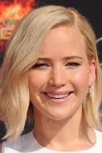
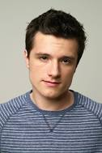
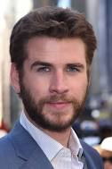
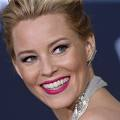
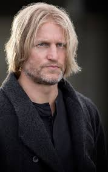
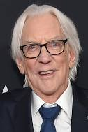
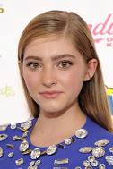

Elenco
ELENCO
Jennifer Lawrence
Josh Hutcherson
Liam Hemsworth
Elizabeth Banks
Woody Harrelson
Donald Sutherland
Willow Shields

Jennifer Lawrence - Katniss Everdeen
- Jennifer tem 34 anos atualmente
- Ela nasceu nos Estados Unidos, em 1990
- Ela fez a protagonista do filme, algo que alavancou bastante sua carreira
- Em 2013, ela foi a mulher mais jovem a ganhar um oscar de Melhor Atriz até aquele momento

Josh Hutcherson - Peeta Mellark
- Josh tem 31 anos atualmente
- Ele nasceu nos Estados Unidos, em 1992
- Ele foi o coadjuvante principal no filme, sendo o parceiro de Katniss na arena
- Ele comecou sua carreira atuando em comerciais

Liam Hemsworth - Gale Hawthorne
- Liam tem, assim como Lawrence, 34 anos atualmente
- Ele nasceu na austrália, em 1990
- Ele foi um coadjuvante, não tão protagonista como Josh, no filme, sendo o amigo de infância da protagonista
- Ele é irmão de Chris Hemsworth, ator do Thor, na Marvel

Elizabeth Banks - Effie Trinket
- Elizabeth tem 50 anos atualmente
- Ela nasceu nos Estados Unidos, em 1974
- Ela era uma das pessoas que ajudava Katniss e Peeta no filme, tendo mais destaque que os outros
- Ela tentou atuar como Mary Jane no filme do Homem-Aranha, mas não conseguiu o papel

Woody Harrelson - Haymitch Abernathy
- Woody tem 63 anos atualmente
- Ele nasceu nos Estados Unidos, em 1961
- Ele era o "treinador" dos dois principais, dando dicas para a arena
- Ele é o segundo mais velho do elenco, perdendo apenas para Donald, que infelizmente veio a falecer este ano

Donald Sutherland - Presidente Snow
- Donald tinha 88 anos quando faleceu
- Ele nasceu nos Canadá, em 1935, e morreu em 2024 nos Estados Unidos
- Ele era o ditador do país
- Ele se casou 3 vezes em vida, ficando com sua última esposa até seu falecimento

Willow Shields - Prim Everdeen
- Willow tem 24 anos atualmente
- Ele nasceu nos Estados Unidos, em 2000
- Ela era a irmã mais nova de Katniss
- Ela é a atriz mais nova do elenco